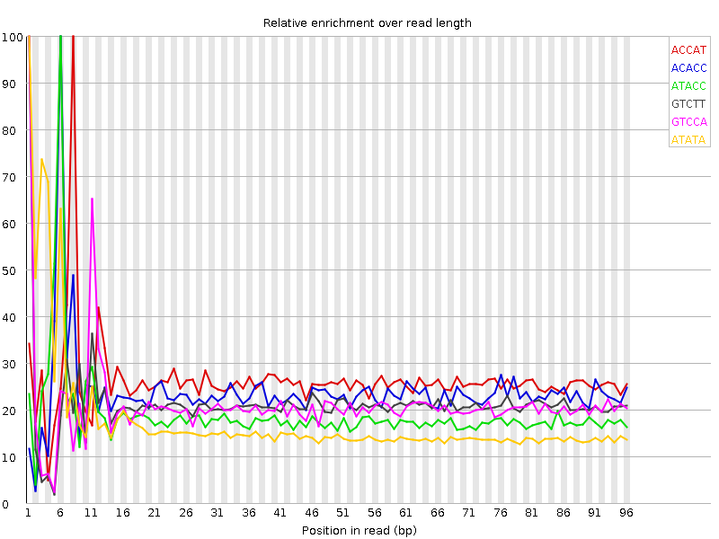

Thu 12 Feb 2015
8_140619_BC47HDACXX_P1260_1004_2.fastq.gz
Summary
![[FAIL]](Icons/tick.png) Basic Statistics
Basic Statistics
| Measure |
Value |
| Filename |
8_140619_BC47HDACXX_P1260_1004_2.fastq.gz |
| File type |
Conventional base calls |
| Total Sequences |
2449087 |
| Sequence length |
101 |
| %GC |
37 |
Back to summary
![[FAIL]](Icons/warning.png) Kmer Content
Kmer Content

| Sequence |
Count |
Obs/Exp Overall |
Obs/Exp Max |
Max Obs/Exp Position |
| ACCAT |
334175 |
1.3283161 |
5.042738 |
8 |
| ACACC |
179650 |
1.1986943 |
5.034722 |
6 |
| ATACC |
287745 |
1.1437607 |
6.00244 |
6 |
| GTCTT |
278860 |
1.1086687 |
5.1945195 |
1 |
| GTCCA |
159595 |
1.0652207 |
5.0555573 |
1 |
| ATATA |
742200 |
1.0471088 |
5.888872 |
1 |
| GTATT |
436670 |
1.0343467 |
7.552987 |
1 |
| AATAC |
427085 |
1.0114373 |
5.7667513 |
5 |
| ATACA |
409320 |
0.9693656 |
5.1119814 |
6 |
| TAATA |
657995 |
0.9283109 |
5.2245455 |
4 |
| TATTA |
650070 |
0.91702247 |
6.424454 |
2 |
| ATACT |
372605 |
0.88231224 |
5.876326 |
6 |
| TATAC |
366735 |
0.8684123 |
6.9470224 |
5 |
| GTATA |
347025 |
0.82209975 |
8.651193 |
1 |
| TATAA |
557400 |
0.78638965 |
5.3193526 |
2 |
Back to summary
![[FAIL]](Icons/error.png) Per base sequence content
Per base sequence content